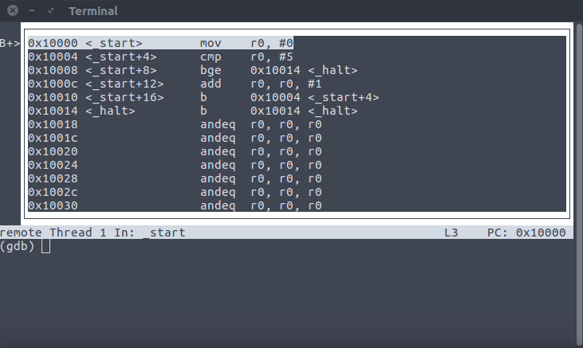
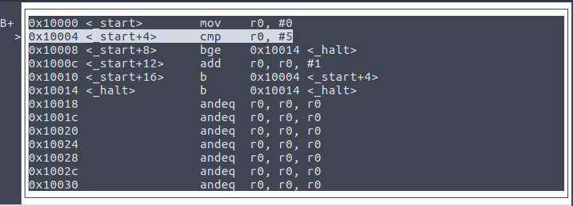

Bases de l'assembleur
Task1 -- Execution Flow
Step2: Exécution en pas à pas
Maintenant que nous savons lancer QEMU et GDB, nous pouvons exécuter un premier programme instruction par instruction. Restez dans le répertoire task1. Voici le programme assembleur se trouvant dans le fichier start.s:
.global _start
_start:
mov r0, #0 // load r0 with 0
_loop: // loop until r0==5
cmp r0, #5 // compare r0 with 5
bge _halt // if r0>=5, branch to _halt
add r0, r0, #1 // increment the register r0
b _loop // loop over
_halt:
b _halt // spinning until powered down.
Plusieurs choses à observer dans ce fichier:
il y a des choses qui ne sont pas des instructions assembleur:
.global _start : c'est une directive qui permet au compilateur de savoir ou commence le programme.
_start,
_loop,_halt:ceux sont des
étiquettes qui permet de se repérer dans le programme.
// load r0 with 0 : tout ce qui suit // est un commentaire
Le reste sont des
instructions qui seront exécutées par le processeur.
La première instruction stocke la valeur 0 dans le registre r0
Alors, exécutons ce programme sur la machine virtuelle QEMU sous le contrôle du debogueur gdb. Vous vous rappelez comment ? Génial. Sinon, revenez à l'étape précédente.
Une fois que vous avez lancé Qemu et le débogueur, nous devons changer la disposition de l'écran du débogueur afin que nous puissions mieux voir où nous en sommes dans le code. Demandons à gdb de changer sa disposition:
On peut visualiser l'exécution du programme sous différentes formes. Le changement de forme est circulaire, il n'y a donc aucun risque, continuez à demander la mise en page suivante et vous finirez par revenir à celui que vous avez actuellement. Vous pouvez aussi accéder directement à une forme. Faites help layout pour comprendre comment.
Quoi qu'il en soit, vous devriez voir quelque chose comme ceci:
Vous pouvez voir que l'exécution est arrêtée à l'adresse 0x10000. Cela signifie que le processeur va chercher l'instruction suivante à exécuter à partir de cette adresse. Vous pouvez le vérifier en observant le registre r15, également appelé compteur de programme (PC).
Le compteur de programme (PC), contient l'adresse en mémoire de la prochaine instruction à exécuter. Lorsque le processeur veut exécuter la prochaine instruction, il charge l'instruction à l'adresse contenue dans PC, l'exécute, incrémente la valeur de PC pour qu'elle corresponde à l'adresse de l'instruction suivante, et ainsi de suite jusqu'à la fin des temps (ou l'extinction du processeur).
Comment visualiser la valeur d'un registre ? Juste comme ça:
Remarque: Une des forme donnée par layout next montre les registres et la source du programme, cela peut s'avérer utile, plutôt que d'avoir à demander à visualiser la valeur des registres au cas par cas.
La commande print peut être abrégée avec juste "p". Notez également le "/ x", il demande la valeur à imprimer en hexadécimal, plutôt que décimal. Enfin, notez la notation bizarre pour les registres: $ pc au lieu de seulement pc. Souvenez-vous également que le compteur de programme est en fait le registre r15.
Pour exécuter une seule instruction, rien de plus simple, demandez simplement à gdb de le faire avec l'instruction stepi, qui peut être abrégée avec si. Cela devrait ressembler à ceci :
Le processeur a exécuté la première instruction, en déplaçant la valeur 0 dans son registre r0. Ce faisant, il a augmenté la valeur de son compteur de programme, donc r15 a la valeur 0x10004.
Pourquoi 0x10004? Parce que toutes les
instructions ont une longueur de 4 octets en mémoire. Regardez
sur le
côté gauche, vous pouvez voir les adresses de chaque instruction.
Notation hexadécimale: le 0x permet de préciser que les adresses sont données en hexadécimal (base 16). Cette notation est plus pratique que la base 2. A noter qu'un chiffre hexadécimal représente 4 bits. Voici un tableau donnant la conversion binaire, décimal, héxadécimal pour les 16 chiffres hexadécimaux.
| binary | hexa | decimal |
|---|---|---|
| 0000 | 0x0 | 0 |
| 0001 | 0x1 | 1 |
| 0010 | 0x2 | 2 |
| 0011 | 0x3 | 3 |
| ... | ... | ... |
| 1010 | 0xA | 10 |
| 1011 | 0xB | 11 |
| ... | ... | ... |
| 1111 | 0xF | 15 |
On passe ainsi de l'adresse 0x10008 à 0x1000C (dans la liste des
adresses d'instructions qui se suivent en mémoire) puisque C représente
la valeur 12 (en décimal). De même on passe de 0x1001C à 0x10020.
Vous pouvez essayer le programme gnome-calculator,
il est génial, il convertit les nombres dans les différentes bases
(décimaux, hexadécimaux et binaires).
Vous
pouvez voir où se trouve l'exécution, regardez la ligne en
surbrillance. Vous pouvez également imprimer la valeur de r0 et
vérifier que c'est bien la valeur 0.
Alors allez-y, continuez seul à exécuter les instructions une par une à l'aide de stepi. Comprenez au passage l'instruction add r0, r0, #1
Avez-vous remarqué la boucle dans le programme? Voyez
comment le processeur remonte à l'etiquette _loop (adresse 0x10004) à cause de
l'instruction de branchement b _loop
Comment se passe ce branchement ? D'habitude le processeur passe à l'exécution de l'instruction qui se trouve après l'instruction courante (4 adresses plus loin en mémoire): le compteur programme est augmenté de 4. L'instruction de branchement b va modifier ce comportement en affectant à pc l'adresse correspondante à l'étiquette donnée (ici _loop= 0x10004).
Si nous continuons l'exécution nous constatons que l'on sort de cette boucle par l'instruction bge _halt qui est aussi une instruction de branchement mais conditionnelle. En effet le branchement n'a lieu que si la condition "ge" (Great or Equal) est vraie. Mais qu'est ce qui est plus grand ou égal ?
Ce sont les arguments de l'instruction précédente cmp r0, #5, donc ici le registre r0 et la valeur 5.
Donc le branchement n'a lieu que si r0 est plus grand ou égal à 5.
Vérifiez que tout cela est vrai en observant r0.
La fin du programme consiste en une boucle infinie sur l'étiquette _halt
______________________________________________________________________________
Résumons les instructions que nous avons éxécutées:
- mov reg, #imm
Stocke une valeur imm dans yun registre reg
Exemple:mov r3, #2 - Il existe aussi mov reg1, reg2
le registre reg1 prend la valeur du reg2
Exemple:mov r3, r2 - cmp reg, #imm
Compare en vue d'une instruction de branchement une valeur imm avec le registre reg.
Exemple:cmp r3, #23 - cmp reg1, reg2
Compare la valeur du registre reg1 avec la valeur du registre reg2. Le résultat de cette comparaison est stocké dans un registre spécifique appelé cpsr
Exemple:cmp r3, r7 - bge label
Branchement à l'étiquette label si "supérieur ou égal" suivant les arguments de l'instruction de comparaison précédente.
Exemple:bge _halt
Note: Différentes conditions de branchement existent:
- beq: branch if equal
- bne: branch if not equal
- blt: branch if less than
- ble: branch if less than or equal
- bgt: branch if greater than
- bge: branch if greater than or equal
- b label
Branchement toujours à l'étiquette label
Exemple:b _halt - add reg1, reg2, #imm
Additionne la valeur du registre reg2 et de la valeur imm, le résutat est stocké dans le registre reg1
Exemple:add r1, r2, #15 - add reg1, reg2, reg3
Additionne la valeur du registre reg2 et celle du registre reg3, le résutat est stocké dans le registre reg1
Exemple:add r1, r1, r10
Note: les instructions de soustraction (sub) et de multiplication (mul) ont la même syntaxe que add